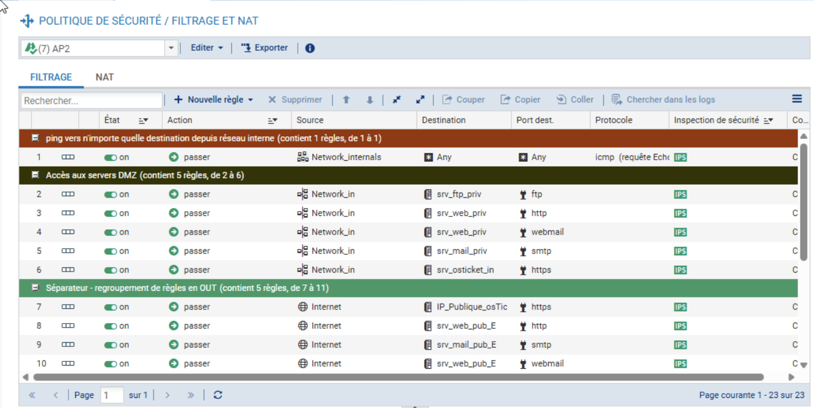
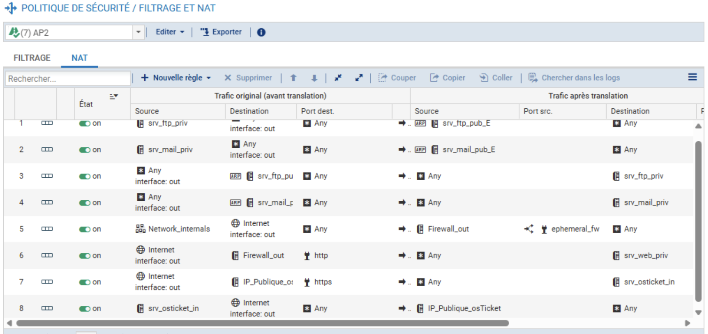
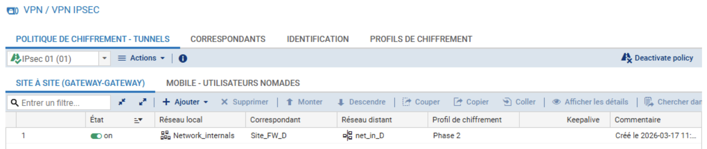

Déploiement et configuration d'un pare-feu Stormshield Network Security. Ce projet a pour but de sécuriser l'infrastructure interne, d'exposer de manière contrôlée les services web via une DMZ, et de permettre un accès distant sécurisé aux administrateurs et utilisateurs nomades via des tunnels VPN (IPsec et SSL).
Le pare-feu est le cœur de mon architecture réseau. J'ai mis en place une ségrégation stricte pour protéger mes équipements :
De plus, j'ai configuré des connexions VPN IPsec et VPN SSL pour garantir un accès distant sécurisé aux ressources internes, répondant ainsi aux besoins d'administration à distance et de télétravail.
WAN IP : 192.36.253.5
Accès Public osTicket
Filtrage d'état (Stateful)
Règles NAT/PAT
Tunnels VPN IPsec & SSL
192.168.5.0/24
Windows Server 2022
(192.168.5.100)
Client Win 11
(192.168.5.2)
172.16.5.0/24
Serveur Web Debian
(172.16.5.2)
Ports ouverts : 80 / 443
Topologie de l'infrastructure : Le pare-feu bloque par défaut tout le trafic entrant. Seul le trafic web légitime est redirigé (NAT/PAT) vers la DMZ. Le réseau IN n'est pas exposé directement, mais reste accessible de manière chiffrée via les tunnels VPN IPsec et SSL.


Translation d'adresses et redirection des ports (80/443) de l'IP publique vers le serveur web osTicket (DMZ).

Paramétrage des accès cryptés distants via les protocoles IPsec (Site-à-Site) et SSL (Nomades).